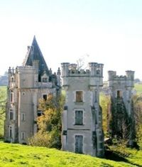
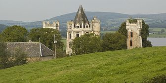
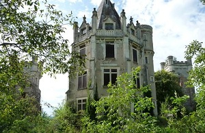
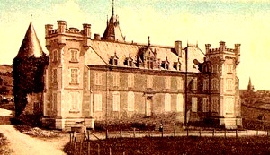
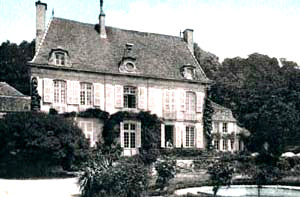

Recensement Jean-Claude Truffet





| Département | 71 — Saône-et-Loire |
| Canton | St-Leger-sous-Beuvray |
| Commune | St-Didier-sur-Arroux |
| Type d'édifice | Château |
| Période d'origine | XVI |
ST-DIDIER sur ARROUX, Chevannes-d'Azon, une famille de ce nom y possédait au XVe siècle. Hugues de Chevannes, chevalier, reprit de fief à La Roche-Milay, en 1444, Jean son fils renouvela ce devoir en 1495, cette seigneurie entra dans la famille de Berger de Charency. Jean de Marry, chevalier fit hommage pour Chevannes, en 1555 et Jeanne de Digoine, veuve de Jean de Barvaud, en 1579, moulin à eau avec roue en fer sur La Braconne.
Charancy ou Charency. Le fief, formait autrefois, une seigneurie en toute justice, dans la mouvance de l'évêché d'Autun. Hervé de Donzy, comte de Nevers, dont elle relevait en arrière-fief, à cause de la châtellenie de Luzy, en fit aveu, à l'évêque Gauthier Ier, en 1209. Elle comprenait le bourg de Saint-Didier, où se rendaient les exploits de sa haute justice. Jean de Charency, seigneur du lieu pris part au siège de Château-Chinon, et laissa ce fief à Huguenin, son fils aîné, qui en jouissait en 1449. Le fief passa ensuite à la famille de Berger d'Autun, qui en prenait le nom.. René de Berger en était seigneur en 1706. Cette terre entra plus tard, dans la maison André dont une branche en portait aussi le nom. Pierre André de Charency est connu pour ses bonnes uvres, il fonda en 1768, douze lits à l'hôpital d'Autun, sa ville natale. Ce seigneur avait abandonné sa terre de Charancy, pour l'acquit de ses legs divers, mais son frère André de La Collonge, chevalier de Saint-Louis, en fit retrait au moyen d'une somme de cent mille livres. Elle appartenait au XIXe siècle siècle à la maison de Martenne.
St-Didier sur Arroux; plusieurs châteaux; Charancy ou Charency.
C'est le premier nom du bourg, situé à environ 1 kilomètre du bourg actuel, et ou se dresse la carcasse du château de Charency, qui était flanqué de deux pavillons et de deux tours, on y voit une chapelle gothique qui renfermait une belle statue de Saint-Gabriel patron des lieux. Demetry , avec une villa appartenant à Saint-Didier, évêque d'Auxerre. Un chemin dont subsistent quelques vestiges, Elle était, au Xe siècle siècle, une seigneurie dépendante de l'Abbaye de Saint-Martin d'Autun. Ce hameau était jadis alternatif de Saint-Nizier-sur-Arroux.
Le château de Gissy, qui donnait droit à une partie des dîmes de la paroisse. Jean de La Vallade de Trufin, en était le seigneur en 1720, et son fils en 1737. Cette seigneurie passa ensuite à la maison de Busseul.
Jouleaux; A l'ouest de Démétry, on y voit un petit château avec une tour ronde, datant de la fin du XVe siècle, début XVIe siècle,
Patigny, appartenait en 1716, à Martin-Elie de Cercey, seigneur de Jeu et de Chaumigny, duquel il passa à François de La Vallade de Trufin qui en jouissait encore en 1736.
La Ranche, dans l'ancien temps, alternatif avec Poil, Orsa et Patigny, étaient des fiefs en toute justice dans la mouvance de La Roche-Milay. La Ranche et Poil, appartenaient aux XVIIe siècle et au XVIIIe siècle siècles, à la maison de Méru, de Thil Rondeaux Gué sur l'Arroux entre Démétry et Rondeaux.
Varillon; château. La paroisse dépendait jadis de l'archiprêtre de Luzy, elle existait déjà au IXe siècle siècle chef-lieu d'une contrée de perception au XIXe siècle siècle , le seigneur de Gissy et le marquis de Montjeu.
Famille de Georges-Lazare Berger de Charency
"
Château de St-Didier sur Arroux et de Charency